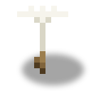
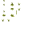
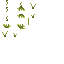
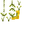
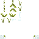
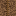
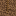

青胶蒲公英
它怎么生长




花朵——唯一能弄死植株的部位。打破它，可能掉落种子。

上层根——为种子而挖。花朵留在原地，并重新扎进坑里。

根尖——为根而挖。植株存活，并重新长出根尖。
植株高三格，露在外面的只有最上面一格。值得挖的东西都在你脚下。
概述
青胶蒲公英就是能种出来的橡胶。 油井会枯竭，田地不会：种下一次，只要你愿意挖，它就一直供应橡胶。
关键在于收成藏在脚下。地面上立着的是一株蒲公英，值钱的是向下两格的根。挖最下面那一块——根尖——它掉落根，而植株继续活着并重新长出新的根尖。你永远不必补种。
弄死它只有一种办法：打破花朵本身。地下无论你做什么，这株蒲公英都扛得住。
现实原型
Taraxacum kok-saghyz 是哈萨克斯坦草原与卡拉套山麓的一种蒲公英。名字来自哈萨克语 "kök-sağız"（绿色口香糖）——早在有人用它做轮胎之前，当地人就在嚼它根部的乳汁。橡胶只存在于根部，最高可达干重的四分之一；田间检验很简单：把晒干的根折断，看断面之间拉出的橡胶细丝。同一条根里的副产糖分——菊粉——在本模组里也从粉碎机出来。
获取
在世界里找。 成熟的蒲公英偶尔出现在稀树草原、高山草甸和风蚀砾石丘陵——大约每 48 个区块有三朵，也就是合适生物群系中每 64×64 格一朵。野生植株的根会自己长成，所以你找到的第一株就已经是完整的柱体。仅限新区块： 你已经探索过的地方不会再冒出青胶蒲公英。
自己种。 种子可以种在任何一格土壤上——草方块、泥土、沙子、耕好的农田，或带 #minecraft:supports_crops 标签的其他模组土壤。不用挖坑：根会自适应。下方有两格土壤就长成向下两格的柱体；石头上只有一格土时，根尖直接长在花朵下方，你只挖一次而不是两次。
生命周期
它在光照 9 及以上时按随机刻生长，和原版作物一样：莲座 → 花蕾 → 黄花 → 绒球。成熟的花随后扎根：下方的土壤变成带根的泥土，根继续向下抵达第二格。
| 阶段 | 农田上的时间 |
|---|---|
| 地上部分，莲座 → 绒球 | 约 3.4 分钟 |
| 根，向下两格 | 再约 2.3 分钟 |
| 同样过程在野地（非农田） | 时间翻倍 |
每一步生长都是一次随机刻。在 randomTickSpeed 3 下，游戏每刻会在每个区段里选三个随机位置， 因此某个方块平均每 68 秒获得一次刻——与邻居无关。这个等待是几何分布，离散程度与均值相同： 除数为 1 时，十分之一的植株 7 秒内就能推进一个阶段，另有十分之一要等超过 157 秒。 所以田地本来就会参差不齐地成熟，和小麦一样；下面的数字是平均值，不是计时器。
各步骤的代价并不相同：第一步便宜，之后越来越贵，最长的那一步正是产出根的一步。 在所有地面里只有沙子能加速——在沙中一步只需通常时间的 75 %。
| 步骤 | 发生什么 | 除数 | 普通地面 | 沙中 |
|---|---|---|---|---|
age 0 → 1 | 莲座 → 花苞 | 1 | 约 1.1 分钟 | 约 0.9 分钟 |
age 1 → 2 | 花苞 → 黄花 | 2 | 约 2.3 分钟 | 约 1.7 分钟 |
age 2 → 3 | 黄花 → 绒球（成熟） | 3 | 约 3.4 分钟 | 约 2.6 分钟 |
| 地上部分合计 | 种下 → 成熟 | — | 约 6.8 分钟 | 约 5.1 分钟 |
| 中间根 | 花下的地面 → 根 | 6 | 约 6.8 分钟 | 约 5.1 分钟 |
| 根尖 | 可收获的根，任意深度 | 9 | 约 10.2 分钟 | 约 7.7 分钟 |
| 根合计 | 成熟 → 完整柱体 | — | 约 17.1 分钟 | 约 12.8 分钟 |
| 总计 | 种子 → 两格成熟的根 | — | 约 23.9 分钟 | 约 17.9 分钟 |
根尖在任何深度都是同一个价——价格取决于长出什么，而不是第几步。否则浅层地面 （石头上只有一格土）就会以第一步的便宜价长出根尖，反而超过完整柱体。浅层地面只是更早 到达第一次收获（约 17.1 分钟对约 23.9 分钟），此后产出速度相同。
耕地毫无用处。 这不是锄头作物，而是长着直根的草原野草：泥土、草方块、灰化土、菌丝体、 泥巴和耕好的农田生长速度完全一样。只有沙子和红沙更快——那才是真实青胶蒲公英的环境： 它生长在排水良好的轻质沙土上，幼苗在沙土中的成活率高于壤土；而且直根在疏松的地面里更容易向下伸展， 胡萝卜种在沙里也是同样的道理。
速度是通过植株自己的根读取的：被根占据的那一格记得自己替换掉的地面， 所以一根扎进沙里的柱体在整个深度上都保持沙地的速度。
收获后的重新生长（花保持成熟，不必重新长熟）：
| 挖走了什么 | 需要等待 |
|---|---|
| 根尖（产出根的那部分） | 土中约 10.2 分钟，沙中约 7.7 分钟——农场的工作周期 |
| 中间根 | 土中约 6.8 分钟，沙中约 5.1 分钟 |
| 两者 | 土中约 17.1 分钟，沙中约 12.8 分钟 |
持续产量：普通地面约每株每小时 6 个根，沙中约 8 个。二十株的种植园大约每分钟产出两到三个根。
骨粉和洒水器每次只买一步——一个阶段或一格根。速度可以买，黑暗和"无处可长"买不到。收割掉的根尖会以同样速度重新长出。
查看根系
走到花朵旁并按住潜行键（默认 Shift）。地下会出现立体的根，外面裹着一层原始土壤的轻薄纹理外壳。 格子边界标出以方块计的深度。松开按键，透视会缓缓消失。提示中的按键会跟随你自己的按键设置。
此时背景会被压暗但不会全黑：地形、地平线和天空仍然可辨，以免在地下失去方向感。 压暗的程度由客户端设置 决定（百分比，默认 85，允许 10–95）。
查看会显示五格范围内最近的至多八株可见植株。墙会把花朵挡在查看之外；相邻的矿脉和洞穴不会被暴露。 瞄准某株时会显示状态：根尚未长出、仍在生长、可以收获，或生长受阻。
一格并不总是代表可以收获。 在深层土壤上这是生长的第一阶段；在石头之上的土壤里会直接形成一截 短的成熟根尖。两格则是长根。若上层段已被挖走，只显示实际留下的下层段，不会画出臆造的连接。
四个地上阶段和两种根都使用设计师的原始模型。查看在客户端执行，不改变方块、光照、碰撞或生长速度。
收获
一条规则：挖根尖，别摘花。
| 操作 | 结果 |
|---|---|
| 挖根尖（下层根块） | 1 × 根 + 35% 概率种子；原始地面被恢复，植株存活并重新长出根尖 |
| 挖上层根块 | 35% 概率种子，没有根；花朵留在原地并重新扎进坑里 |
| 打破花朵 | 植株死亡；35% 概率种子 |
| 植株死亡后的根 | 留在地里——仍可挖出，但已无物让它重新长出 |
| 右键采绒球 | 什么也没有：橡胶在地里，不在绒毛里 |
每次收获都有概率返还种子，所以一片田会自己维持种源。
加工
根送进粉碎机——这条链不需要新机器：
| 材料 | 产出 | EU/FE |
|---|---|---|
| 2 × 青胶蒲公英根 | 1 × 生胶 + 1 × 菊粉 | 300 |
菊粉无法与生胶堆叠，因此粉碎机会把它从顶部抛出——在上面放个漏斗或管道，副产物就会自己离开，不会堵住机器。之后照常：硫化机用生胶加硫磺产出橡胶，400 EU/FE。
自动化
- 镰刀（对成熟植株潜行右键）挖出一格或两格深处已成熟的根尖，且不伤植株。
- 园丁无人机够不到根——它悬停在田地上方，而根在两格深处。它的工作是另一件事：割下成熟的花、收走种子并把种子重新种下。于是你得到一座自动的种子农场；根仍然归你和镰刀。无人机也能把青胶蒲公英种在未耕作的地面上。
- 洒水器一步一步地加快生长。
进度
这是通往 LV 时代可再生橡胶的入口：电缆绝缘、高级电路和护甲网现在都能种出来。成就「深根」位于 first_oil 与 rubber_production 之间——抽油的玩家和种田的玩家从两端走到同一种橡胶。
旧世界
新的根会为每一段分别保存原始地面的状态：沙子仍是沙子，红沙仍是红沙，耕地保留记录的湿度。 只要该段仍被根占据，它就是根方块：原始地面的行为（沙子下落、湿度变化）不会执行刻。收获后会恢复 保存的状态，普通规则重新生效。带有自身 BlockEntity 的地面不会被根替换——它们的数据无法装进 BlockState，会丢失。 后果是：在这样的地面上花可以种下并成熟，但下面永远不会长出根。原版没有这样的方块， 这只涉及带 BlockEntity 的模组土壤。更早保存、尚未记录地面的 旧段落会按泥土显示并恢复；它们的 id 和 tip 属性都被保留。
野生植株只随新区块出现：已经住熟的草原不会长出蒲公英。不过一粒种子就够用一辈子——来自别的世界、朋友，或一次远行——此后这片田就自给自足了。
方块属性
| 属性 | 数值 |
|---|---|
| 花 | 立体模型，无碰撞，age 0..3，随机刻 |
| 根块 | 外观与被替换地面相同的完整方块，tip 属性，不执行刻的 BlockEntity 保存该地面 |
| 柱体 | 1×3：花 + 2 个根块 |
| 土壤 | #minecraft:dirt、草方块/灰化土/菌丝体/泥巴、#minecraft:sand、#minecraft:supports_crops；一格即可 |
开放问题
- 菊粉目前仍是没有配方的物品——为将来的饲料/食物做铺垫。
- 银胶菊和一枝黄花是这条分支的下两种植物。
相关
- 粉碎机——把根粉碎成生胶与菊粉。
- 硫化机——生胶 + 硫磺 → 橡胶。
- 孵化器——复制橡胶的应急路线。
- 橡胶——材料及其用途。
- 洒水器、园丁无人机站、镰刀——生长与收获的自动化。